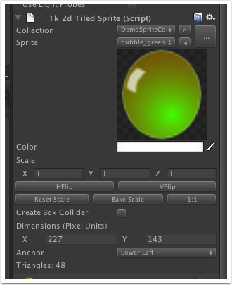
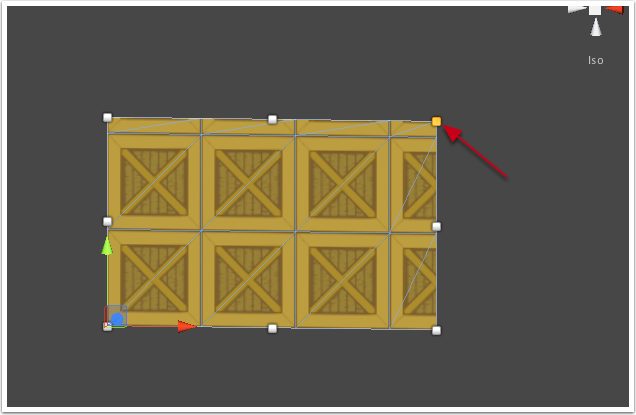

Documentation
Script Reference
Forum
Documentation
Script Reference
Forum

Create Box Collider - If ticked, a tight fitting box collider will be created around this sprite. You can adjust the collider depth on the collider itself.
Anchor - Selects the anchor for this sliced sprite.
Dimensions (Pixel Units) - This is the dimensions of the sliced sprite in pixel units. Pixel units in this case are pixels in the source texture. So, if your sliced sprite source image is 8x8, then if the dimensions were set to 8x8, the size of the sprite would match the original sprite itself. A size of 16x16 would make it twice the size of the original sprite.
You can also use the scale parameter to uniformly scale the entire sliced sprite, much like how transform.scale works.
Triangles - Tells you how many triangles are required to render this tiled sprite. The more the tiling, the more triangles will be required. A sensible upper limit is around 1000 triangles, but of course this very much depends on what else you're doing in your scene / game.
You can also adjust the tiling of the sliced sprite by dragging the handles in scene view.
